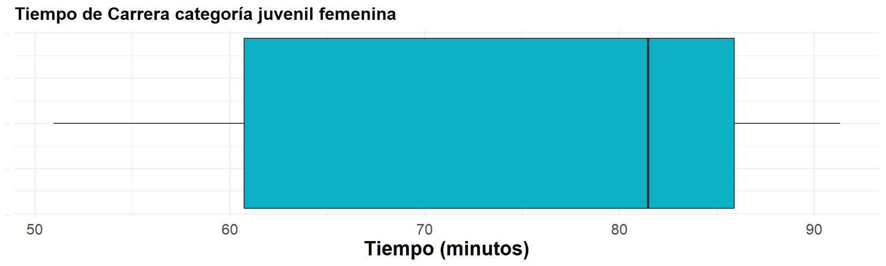

Una vez que los datos han sido organizados y su distribución ha sido observada a través de tablas o gráficos de frecuencias, en ocasiones es necesario utilizar indicadores que resuman la información. Estos indicadores tienen la función de, mediante un único valor, representar todo el conjunto de observaciones, permitiendo destacar aspectos importantes como:
Magnitud: Valor representativo de las observaciones.
Homogeneidad: Grado de dispersión entre los datos.
Simetría: Relación entre los valores extremos y los valores centrales.
Entre los principales indicadores de tendencia central se encuentran:
Media aritmética (también conocida como promedio): Calcula el valor promedio de todas las observaciones.
Mediana: Representa el valor que divide el conjunto de datos en dos partes iguales.
Moda: Indica el valor que ocurre con mayor frecuencia en el conjunto de datos.
La media aritmética es el indicador de tendencia central más conocido y utilizado debido a su fácil interpretación y cálculo. Este indicador se define como la suma de todos los valores de un conjunto de datos, dividida por el número total de datos.
\[ \bar{x}= \frac{1}{n} \sum_{i=1}^{n} x_{i} \]
Donde:
\(\bar{x}\): Representa la media aritmética.
\(n\): Es el número total de observaciones.
\(x_i\): Es el valor de la \(i\)-ésima observación.
La media proporciona un valor representativo que resume todo el conjunto de datos, siendo especialmente útil en distribuciones simétricas.
A continuación, se presentan los códigos en R utilizados para calcular la media aritmética de los tiempos correspondientes a la categoría juvenil femenina:
# Cargar la librería y los datos
library(paqueteMETODOS)
# Cargar los datos de la carrera
data("CarreraLu22_c1F")
# Convertir los tiempos de segundos a minutos y redondearlos a 2 decimales
x = round(CarreraLu22_c1F$timerun / 60, 2)
# Mostrar los tiempos
x
# Calcular y mostrar estadísticas básicas
cat("n = ", length(x), "\n")
cat("suma = ", sum(x), "\n")
cat("promedio = ", mean(x))
# Calcular promedio
mean(x)
# Cargar la librería y los datos
library(paqueteMETODOS)
# Cargar los datos de la carrera
data("CarreraLu22_c1F")
# Convertir los tiempos de segundos a minutos y redondearlos a 2 decimales
x = round(CarreraLu22_c1F$timerun / 60, 2)
# Mostrar los tiempos
x
# Calcular y mostrar estadísticas básicas
cat("n = ", length(x), "\n")
cat("suma = ", sum(x), "\n")
cat("promedio = ", mean(x))
# Calcular promedio
mean(x)Tiempos: 50.97 60.38 61.10 81.48 83.05 88.77 91.33 n = 7 suma = 517.08 promedio = 73.86857Las mujeres de la categoría juvenil femenina presentan un tiempo promedio de carrera de 73.87 minutos.
La media aritmética posee varias propiedades matemáticas importantes que la hacen una herramienta fundamental en el análisis de datos. A continuación, se detallan sus principales características:
Propiedad 1:
La suma de las desviaciones de los datos con respecto a la media es
cero.
\[
\sum (x_{i}-\bar{x})=0
\]
Propiedad 2:
La suma de los cuadrados de las desviaciones de los datos con respecto a
un valor \(a\) es mínima cuando \(a = \bar{x}\).
Propiedad 3:
Si \(x_{i} = k\) para todo \(i\), entonces,
\[
\bar{x} = k
\]
Propiedad 4:
Si todos los datos de una variable se multiplican por una constante
\(k\), es decir, \(y_{i} = kx_{i}\), entonces:
\[
\bar{y} = k\bar{x}
\]
Propiedad 5:
Si \(z_{i} = a x_{i} + b y_{i}\), donde
\(a\) y \(b\) son constantes, y \(x_{i}\), \(y_{i}\) son variables, entonces:
\[
\bar{z} = a\bar{x} + b\bar{y}
\]
La mediana es el valor que divide una muestra en dos partes iguales, de forma que el 50% de las observaciones están por debajo de este valor y el otro 50% están por encima. Por esta razón, la mediana también corresponde al percentil 50, al quintil 5 y al segundo cuartil. Matemáticamente:
\[ Me = P_{50} = D_{5} = Q_{2} \]
La mediana se calcula como:
\[ Me = \left \{ \begin{matrix} \dfrac{x_{(n+1)}}{2} & \text{ si } n \text{ es impar }\\ & \\ \dfrac{x_{(n/2)} + x_{(n/2)+1}}{2} & \text{ si } n \text{ es par } \end{matrix} \right. \]
Si el número de observaciones (\(n\)) es impar, la mediana corresponde al valor ubicado en la posición \(\frac{n+1}{2}\) después de ordenar los datos.
Si \(n\) es par, la mediana es el promedio de los dos valores centrales, es decir, los que se encuentran en las posiciones \(\frac{n}{2}\) y \(\frac{n}{2} + 1\).
La mediana es especialmente útil cuando los datos presentan valores atípicos, ya que no se ve afectada por estos, a diferencia de la media aritmética, que puede distorsionarse en presencia de valores extremos.
A continuación, se presentan los códigos de R para calcular la mediana de los tiempos correspondientes a la categoría juvenil femenina:
# Convertir los tiempos de segundos a minutos y redondear a 2 decimales
x = round(CarreraLuz22_c1F$timerun / 60, 2)
# Mostrar los tiempos
x
# Calcular la mediana
cat("mediana = ", median(x))
# Convertir los tiempos de segundos a minutos y redondear a 2 decimales
x = round(CarreraLuz22_c1F$timerun / 60, 2)
# Mostrar los tiempos
x
# Calcular la mediana
cat("mediana = ", median(x))
x1 x2 x3 x4 x5 x6 x7
[1] 50.97 60.38 61.10 81.48 83.05 88.77 91.33
Mediana = x4 = 81.48
n = 7
La mediana, \(Me\), representa el valor que divide el conjunto de datos en dos partes iguales. En este caso, el número total de observaciones es \(n = 7\), lo que indica que:
La posición de la mediana corresponde a \(\frac{n + 1}{2} = \frac{7 + 1}{2} = 4\).
El cuarto valor en el conjunto de datos ordenados es \(x_4 = 81.48\).
Por lo tanto:
\[ Me = x_{4} = 81.48 \]
En el gráfico de cajas (ver Figura 1.28), la línea central de la caja representa la mediana del conjunto de datos. Los extremos de la caja corresponden a los cuartiles 1 y 3 (\(Q_1\) y \(Q_3\)), mientras que los valores iniciales y finales determinan el mínimo y el máximo de los tiempos de la carrera. Como no hay puntos antes o después de las líneas de los bigotes del gráfico, no se aprecian datos atípicos en este conjunto.
# Cargar librerías necesarias
library(paqueteMETODOS)
library(ggplot2)
# Cargar los datos
data("CarreraLu22_c1F")
# Convertir tiempos a minutos y redondear a 2 decimales
x = round(CarreraLuz22_c1F$timerun / 60, 2)
df <- data.frame(x = x)
# Crear un gráfico de caja horizontal
ggplot(df, aes(x = x)) +
geom_boxplot(fill = "#0EB0C6") +
theme_minimal() +
labs(title = "Tiempo de Carrera categoría juvenil femenina",
x = "Tiempo (minutos)") +
Theme1
La moda corresponde al dato o valor que se repite con mayor frecuencia en un conjunto de datos. Es una medida de tendencia central ampliamente utilizada en:
Variables cualitativas: Permite identificar la categoría más frecuente en un conjunto de observaciones.
Variables cuantitativas discretas: Es útil cuando los datos tienen un número limitado de valores posibles.
Puede existir más de una moda en un conjunto de datos, en cuyo caso se denomina multimodal.
Es particularmente útil para describir distribuciones de datos con concentraciones claras en uno o más valores específicos.
La moda, al igual que la mediana, no se ve afectada por valores extremos, lo que la hace adecuada para ciertos tipos de análisis.
En este ejemplo, se utiliza una tabla de frecuencias generada con los códigos de R para identificar la categoría con mayor participación en la carrera.
# Cargar la librería y los datos
library(paqueteMETODOS)
data("CarreraLuz22")
# Generar tabla de frecuencias para la variable 'categoria'
table(CarreraLuz22$categoria)
1. Juvenil 2. Abierta 3. Veteranos A 4. Veteranos B 5. Veteranos C
19 1179 423 227 74 A continuación, se presentan los resultados obtenidos tras ejecutar el código:
1. Juvenil 2. Abierta 3. Veteranos A 4. Veteranos B 5. Veteranos C
19 1179 423 227 74
La tabla de frecuencias indica que la categoría Abierta presenta la mayor participación, con un total de 1179 observaciones. Esto la convierte en la moda de esta distribución, ya que es la categoría más frecuente. Por lo tanto, la categoría Abierta puede considerarse como la más representativa dentro de este conjunto de datos.
Con el fin de evitar que los datos atípicos introduzcan sesgos en el cálculo de la media, es posible utilizar una media truncada, que excluye una proporción fija de los valores más extremos en ambos extremos de la distribución.
En el caso de la media truncada al 10% (\(\bar{x}_{_{0.10}}\)):
Se elimina el 5% de los datos más pequeños.
Se elimina el 5% de los datos más grandes.
Se calcula la media únicamente con el 90% central de los datos restantes.
La media truncada es particularmente útil cuando los datos contienen valores extremos que pueden distorsionar la media aritmética, proporcionando así un indicador más robusto y representativo del conjunto de datos.
En este ejemplo, se calcula la media truncada al 10% (\(\bar{x}_{_{0.10}}\)) para un conjunto de datos. La media truncada excluye el 5% de los valores más pequeños y el 5% de los valores más grandes, utilizando únicamente el 90% central de los datos para el cálculo.
Datos iniciales:
\[ x = \{ 41.67, 42.23, 45.53, 50.82, 52.93, 57.03, 61.13, 62.48, 72.77, 75.58, 76.98, 78.05 \} \]
Después de eliminar los valores extremos (\(41.67\) y \(78.05\)), el conjunto de datos utilizado para el cálculo es:
\[ \{ 42.23, 45.53, 50.82, 52.93, 57.03, 61.13, 62.48, 72.77, 75.58, 76.98 \} \]
La media truncada al 10% se calcula como:
\[ \bar{x}_{_{0.10}} = 59.748 \]
El siguiente código de R muestra cómo realizar este cálculo de forma automática:
# Datos originales x = c(41.67, 42.23, 45.53, 50.82, 52.93, 57.03, 61.13, 62.48, 72.77, 75.58, 76.98, 78.05) # Calcular la media truncada al 10% mean(x, 0.10)
# Datos originales
x = c(41.67, 42.23, 45.53, 50.82, 52.93, 57.03, 61.13, 62.48, 72.77, 75.58, 76.98, 78.05)
# Calcular la media truncada al 10%
mean(x, 0.10)El rango medio es un indicador que se calcula sumando los valores extremos de un conjunto de datos (mínimo y máximo) y dividiendo el resultado por dos. Este indicador se caracteriza por su simplicidad y utilidad cuando se busca una estimación empírica del centro de la distribución, especialmente en datos con distribuciones simétricas. Matemáticamente, se expresa como:
\[ r = \frac{1}{2}\Big(\max(x)+\min(x)\Big) \]
Fácil cálculo: Al utilizar únicamente los valores mínimo y máximo, el rango medio resulta sencillo de calcular y adecuado para análisis exploratorios iniciales.
Alta precisión en distribuciones simétricas: Este indicador es confiable cuando los datos presentan simetría y carecen de valores extremos significativos.
Estimación empírica: Proporciona una aproximación rápida y general al valor central de los datos, aunque es menos robusto frente a valores atípicos en comparación con otras medidas como la mediana.
Los datos tienen una distribución simétrica.
Se requiere una aproximación rápida del centro de la distribución.
No existen valores atípicos que puedan distorsionar el resultado.
En este ejemplo, se calcula el rango medio de una lista de datos. El rango medio se obtiene al sumar el valor mínimo y el valor máximo de los datos y dividir el resultado entre dos.
La lista de datos es la siguiente:41.67, 42.23, 45.53, 50.82, 52.93, 57.03, 61.13, 62.48, 72.77, 75.58, 76.98, 78.05
El valor mínimo es 41.67 y el valor máximo es 78.05.
El cálculo se realiza utilizando el siguiente código en R:
# Lista de datos x = c(41.67, 42.23, 45.53, 50.82, 52.93, 57.03, 61.13, 62.48, 72.77, 75.58, 76.98, 78.05) # Calcular el valor mínimo y máximo range(x) # Calcular el rango medio sum(range(x)) / 2
# Lista de datos
x = c(41.67, 42.23, 45.53, 50.82, 52.93, 57.03, 61.13, 62.48, 72.77, 75.58, 76.98, 78.05)
# Calcular el valor mínimo y máximo
range(x)
# Calcular el rango medio
sum(range(x)) / 2El rango medio se calcula como:
\[ \text{Rango medio} = \dfrac{\text{mínimo} + \text{máximo}}{2} = \dfrac{41.67 + 78.05}{2} = 59.86 \]
Este valor proporciona una estimación empírica del centro de la distribución de los datos.